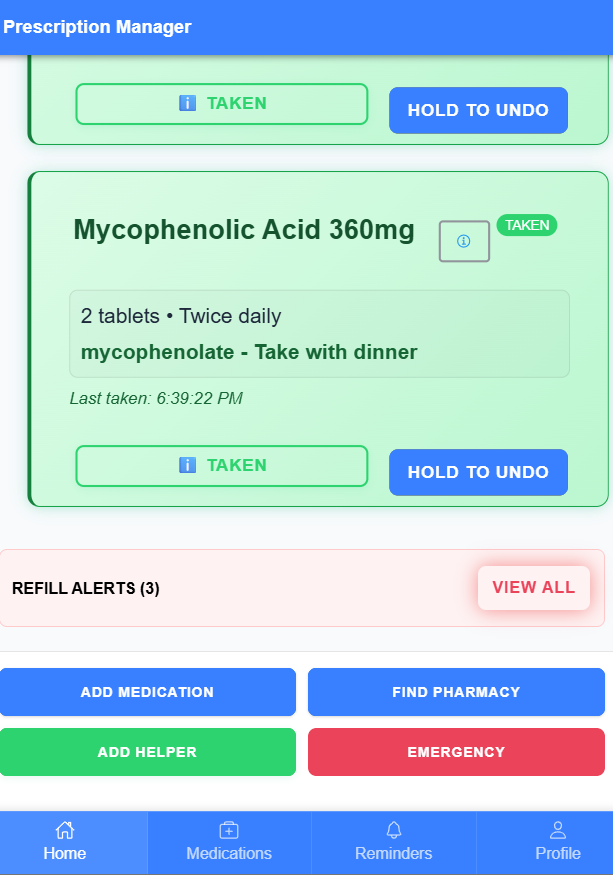
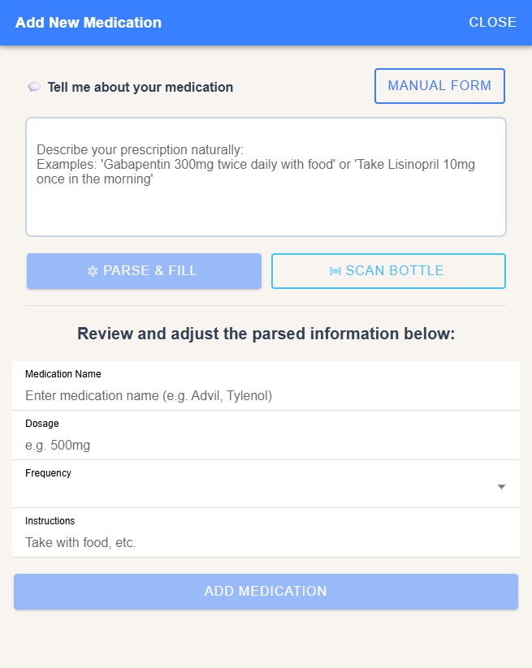
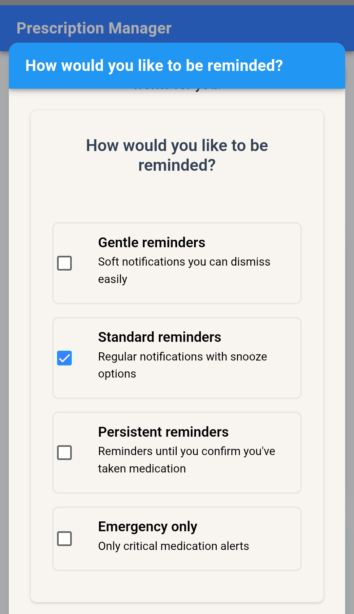

AI Evaluator + Quality Analyst
I evaluate AI the way people actually use it — through clarity, context, and human sense-making.
My background blends 12+ years of high-pressure operational judgment with 2+ years of hands-on work inside generative AI tools, game engines, and creative systems.
I look for what makes an output work: Does it make sense? Does it follow the rules? Does it feel intuitive to a human? Does it support the user's intent without adding friction?
Good evaluation is part logic, part empathy, part pattern recognition — and that's where I do my best work.
Google AI Essentials
Coursera
2025
Google Generative AI Leader
Coursera
2025
Google AI Empathy & Ethics
Coursera
2025
UX/UI Foundations
DesignLab (6-week intensive)
2025
Google Project Management
Coursera
IN PROGRESS (4/7)
I've spent 2+ years building production-ready assets with AI tools — not party tricks, but real outputs for game worlds, characters, and prototypes. At every stage, I'm evaluating: clarity, coherence, bias, edge cases, user intent, accessibility, whether the output actually feels right.
I look for the subtle things: the phrasing that confuses a user, the image that breaks continuity, the behavior that doesn't match the instruction, the moment where the model "thinks" instead of understands.
Across eight original game concepts, I've documented mechanics, balanced systems, mapped player psychology, and stress-tested assumptions. Game design trains you to think in: rules, exceptions, user behavior, failure modes, clarity of feedback, accessibility and player comfort.
It's the same mindset required for evaluating AI — structured, curious, and human-centered.
I've spent over a decade in environments where timing, precision, and judgment matter — breweries, concert venues, and high-volume events. I've done everything from hop additions and tank transfers to canning lines, keg cleaning, CIP/COP, and running festival booths solo.
These roles train you to notice when something is off, catch small inconsistencies, and make fast decisions under pressure. AI evaluation is the same instinct applied to different material: Does this hold up? Does this make sense? Is this the right output?
How I shape an idea into something coherent — fast.
01 CONCEPT SEEDS

Initial screen caps, user flow sketches, medication tracking concepts
02 REFINEMENT

UI polish, accessibility improvements, helper persona flow
03 FINAL OUTPUT

Cross-device sync, pattern learning, ADHD-optimized interface
Built with React Native + Supabase. Solves real medication management chaos for disabled users.
Remote roles in: AI evaluation, data annotation, content review, game content review, trust & safety, quality assurance.
Contract or full-time.
Async/flexible preferred.
East Coast timezone.